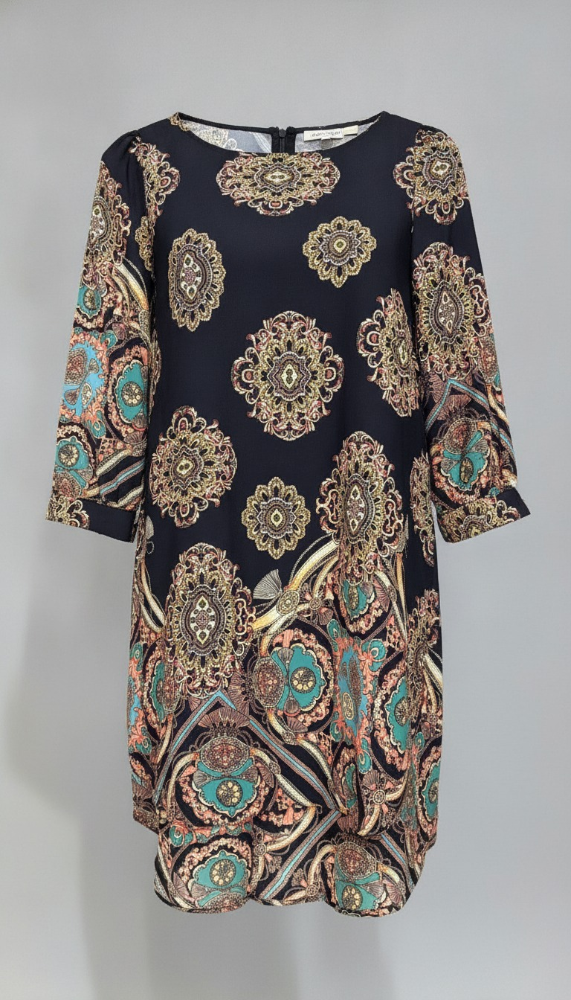 P01vestido ColorAzul marino con estampado ornamental de medallones en tonos turquesa, amarillo, beige y rosaEstiloVestido corto de corte holgado tipo túnicaMaterial—Algodón 100%Algodón 95% / Elastano 5%Algodón 98% / Elastano 2% (mezclilla)Algodón 80% / Poliéster 20%Algodón 60% / Poliéster 40%Poliéster 100%Poliéster 95% / Elastano 5%Poliéster 65% / Algodón 35%Poliéster 70% / Viscosa 30%Viscosa 100%Viscosa 95% / Elastano 5%Lino 100%Lino 55% / Algodón 45%Lana 100%Lana 80% / Poliamida 20%Seda 100%Cashmere 100%Lana 90% / Cashmere 10%Poliamida (nylon) 100%Poliamida 80% / Elastano 20%Acrílico 100%Poliuretano 100% (piel sintética)Cuero 100%DetallesManga tres cuartos con puño, cuello redondo y dobladillo curvo Aprobar Se cambió la prenda
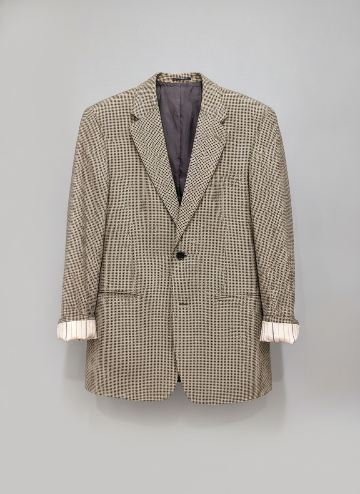 P02blazerCLUB ROOM BY CHARTER CLUB ColorBeige y café con patrón de microcuadrosEstiloBlazer formal de corte rectoMaterial—Algodón 100%Algodón 95% / Elastano 5%Algodón 98% / Elastano 2% (mezclilla)Algodón 80% / Poliéster 20%Algodón 60% / Poliéster 40%Poliéster 100%Poliéster 95% / Elastano 5%Poliéster 65% / Algodón 35%Poliéster 70% / Viscosa 30%Viscosa 100%Viscosa 95% / Elastano 5%Lino 100%Lino 55% / Algodón 45%Lana 100%Lana 80% / Poliamida 20%Seda 100%Cashmere 100%Lana 90% / Cashmere 10%Poliamida (nylon) 100%Poliamida 80% / Elastano 20%Acrílico 100%Poliuretano 100% (piel sintética)Cuero 100%DetallesSolapa de muesca, cierre de dos botones, bolsillos con solapa y puños remangados con forro a rayas Aprobar Se cambió la prenda
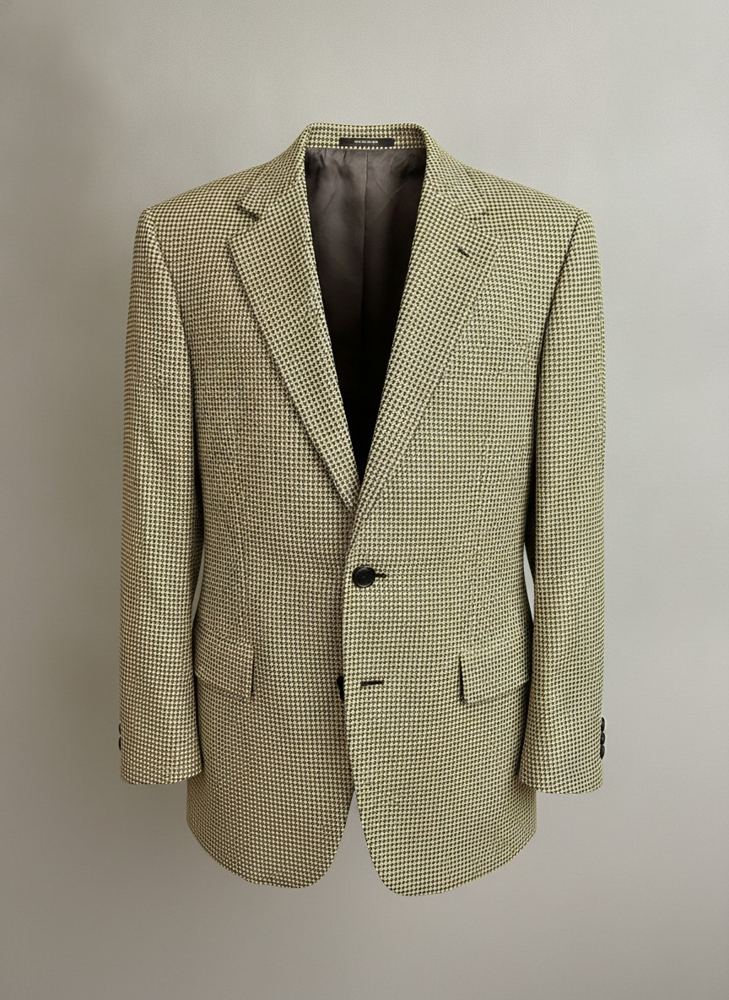 P03blazermacy's men's store, Dante X ColorAmarillo, negro y beige con estampado tipo pata de galloEstiloBlazer de vestirMaterial—Algodón 100%Algodón 95% / Elastano 5%Algodón 98% / Elastano 2% (mezclilla)Algodón 80% / Poliéster 20%Algodón 60% / Poliéster 40%Poliéster 100%Poliéster 95% / Elastano 5%Poliéster 65% / Algodón 35%Poliéster 70% / Viscosa 30%Viscosa 100%Viscosa 95% / Elastano 5%Lino 100%Lino 55% / Algodón 45%Lana 100%Lana 80% / Poliamida 20%Seda 100%Cashmere 100%Lana 90% / Cashmere 10%Poliamida (nylon) 100%Poliamida 80% / Elastano 20%Acrílico 100%Poliuretano 100% (piel sintética)Cuero 100%DetallesBolsillo interno ribeteado y etiquetas decorativas Aprobar Se cambió la prenda
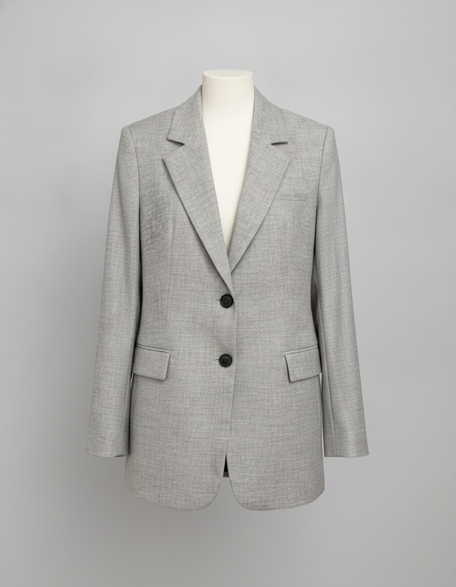 P04blazerZARA EUR M USA M MEX 28 ColorGris jaspeadoEstiloBlazer estructurado de corte rectoMaterial—Algodón 100%Algodón 95% / Elastano 5%Algodón 98% / Elastano 2% (mezclilla)Algodón 80% / Poliéster 20%Algodón 60% / Poliéster 40%Poliéster 100%Poliéster 95% / Elastano 5%Poliéster 65% / Algodón 35%Poliéster 70% / Viscosa 30%Viscosa 100%Viscosa 95% / Elastano 5%Lino 100%Lino 55% / Algodón 45%Lana 100%Lana 80% / Poliamida 20%Seda 100%Cashmere 100%Lana 90% / Cashmere 10%Poliamida (nylon) 100%Poliamida 80% / Elastano 20%Acrílico 100%Poliuretano 100% (piel sintética)Cuero 100%DetallesManga larga, solapa de muesca, cierre de botones negros frontales y bolsillos con solapa Aprobar Se cambió la prenda
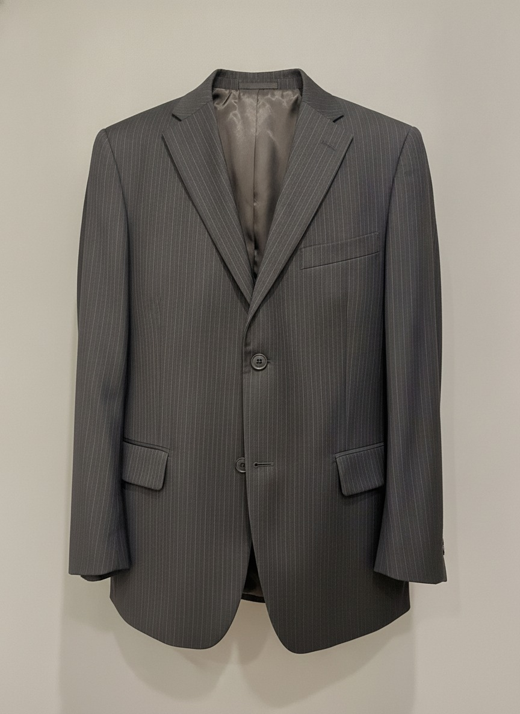 P05blazerROBERT'S ColorGris oscuro con rayas diplomáticas finasEstiloSaco blazer formal de vestirMaterial—Algodón 100%Algodón 95% / Elastano 5%Algodón 98% / Elastano 2% (mezclilla)Algodón 80% / Poliéster 20%Algodón 60% / Poliéster 40%Poliéster 100%Poliéster 95% / Elastano 5%Poliéster 65% / Algodón 35%Poliéster 70% / Viscosa 30%Viscosa 100%Viscosa 95% / Elastano 5%Lino 100%Lino 55% / Algodón 45%Lana 100%Lana 80% / Poliamida 20%Seda 100%Cashmere 100%Lana 90% / Cashmere 10%Poliamida (nylon) 100%Poliamida 80% / Elastano 20%Acrílico 100%Poliuretano 100% (piel sintética)Cuero 100%DetallesManga larga, solapa de muesca, cierre de botones, bolsillos con solapa y botones decorativos en puños Aprobar Se cambió la prenda
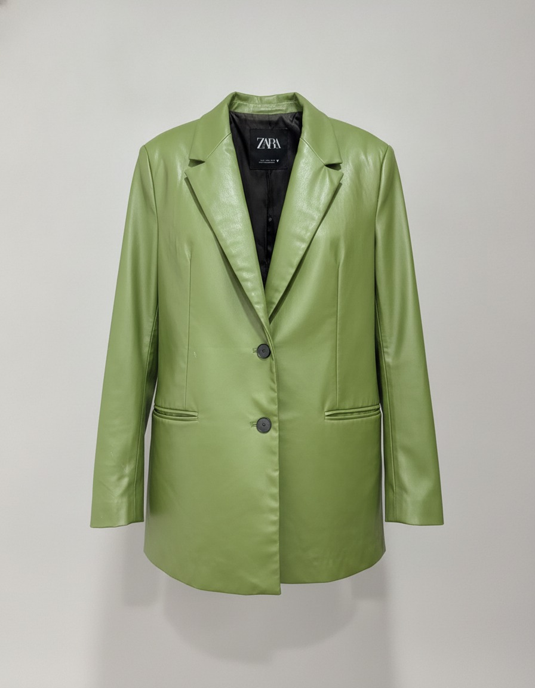 P06blazerZARA EUR M USA M MEX 28 ColorVerde oliva lisoEstiloBlazer de corte rectoMaterial—Algodón 100%Algodón 95% / Elastano 5%Algodón 98% / Elastano 2% (mezclilla)Algodón 80% / Poliéster 20%Algodón 60% / Poliéster 40%Poliéster 100%Poliéster 95% / Elastano 5%Poliéster 65% / Algodón 35%Poliéster 70% / Viscosa 30%Viscosa 100%Viscosa 95% / Elastano 5%Lino 100%Lino 55% / Algodón 45%Lana 100%Lana 80% / Poliamida 20%Seda 100%Cashmere 100%Lana 90% / Cashmere 10%Poliamida (nylon) 100%Poliamida 80% / Elastano 20%Acrílico 100%Poliuretano 100% (piel sintética)Cuero 100%DetallesManga larga, solapa clásica, cierre de botones negros y bolsillos de ojal Aprobar Se cambió la prenda
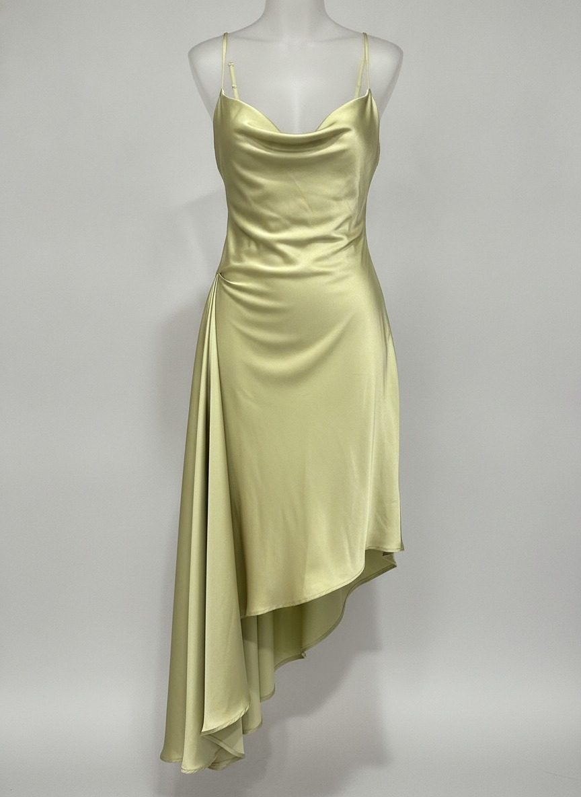 P07vestidoBAOBAB M ColorVerde pistache claro lisoEstiloVestido de tirantes con caída fluida y capas asimétricasMaterial—Algodón 100%Algodón 95% / Elastano 5%Algodón 98% / Elastano 2% (mezclilla)Algodón 80% / Poliéster 20%Algodón 60% / Poliéster 40%Poliéster 100%Poliéster 95% / Elastano 5%Poliéster 65% / Algodón 35%Poliéster 70% / Viscosa 30%Viscosa 100%Viscosa 95% / Elastano 5%Lino 100%Lino 55% / Algodón 45%Lana 100%Lana 80% / Poliamida 20%Seda 100%Cashmere 100%Lana 90% / Cashmere 10%Poliamida (nylon) 100%Poliamida 80% / Elastano 20%Acrílico 100%Poliuretano 100% (piel sintética)Cuero 100%DetallesTirantes delgados ajustables, escote drapeado y paneles superpuestos Aprobar Se cambió la prenda
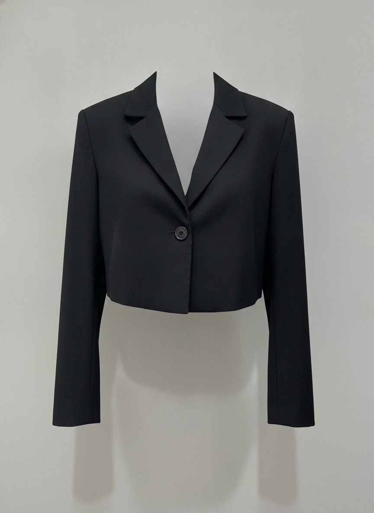 P08blazerZARA EUR M USA M MEX 28 ColorNegro lisoEstiloBlazer corto de corte rectoMaterial—Algodón 100%Algodón 95% / Elastano 5%Algodón 98% / Elastano 2% (mezclilla)Algodón 80% / Poliéster 20%Algodón 60% / Poliéster 40%Poliéster 100%Poliéster 95% / Elastano 5%Poliéster 65% / Algodón 35%Poliéster 70% / Viscosa 30%Viscosa 100%Viscosa 95% / Elastano 5%Lino 100%Lino 55% / Algodón 45%Lana 100%Lana 80% / Poliamida 20%Seda 100%Cashmere 100%Lana 90% / Cashmere 10%Poliamida (nylon) 100%Poliamida 80% / Elastano 20%Acrílico 100%Poliuretano 100% (piel sintética)Cuero 100%DetallesManga larga, cuello con solapa de muesca y botones frontales Aprobar Se cambió la prenda
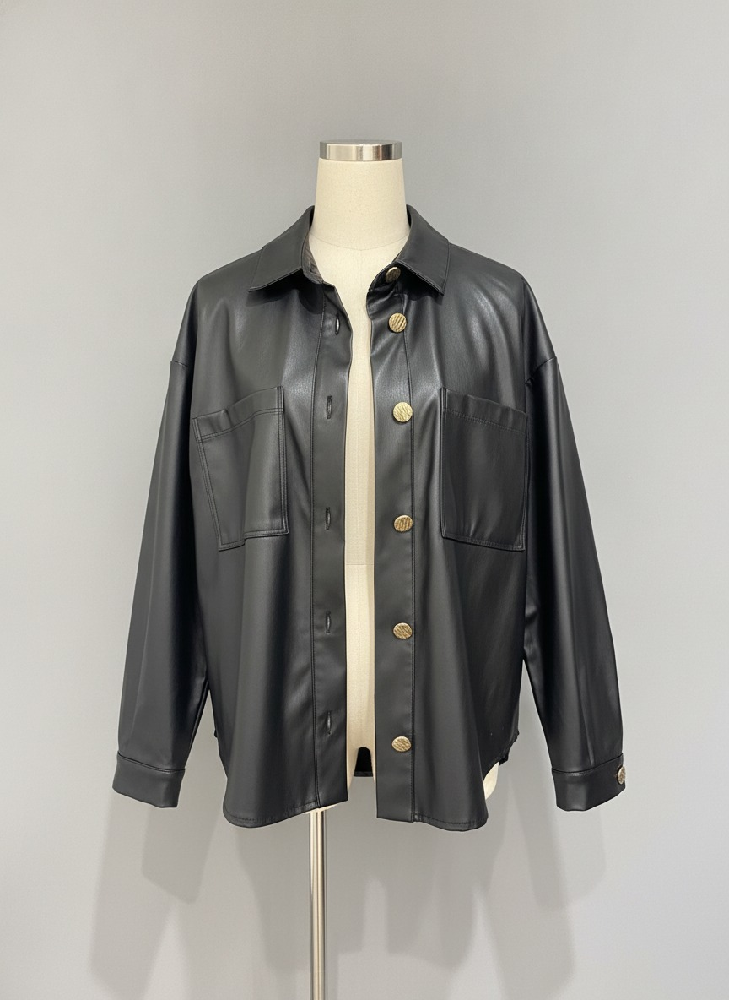 P09chamarraZARA EUR M USA M MEX 28 ColorNegroEstiloChamarra tipo sobrecamisa de corte rectoMaterial—Algodón 100%Algodón 95% / Elastano 5%Algodón 98% / Elastano 2% (mezclilla)Algodón 80% / Poliéster 20%Algodón 60% / Poliéster 40%Poliéster 100%Poliéster 95% / Elastano 5%Poliéster 65% / Algodón 35%Poliéster 70% / Viscosa 30%Viscosa 100%Viscosa 95% / Elastano 5%Lino 100%Lino 55% / Algodón 45%Lana 100%Lana 80% / Poliamida 20%Seda 100%Cashmere 100%Lana 90% / Cashmere 10%Poliamida (nylon) 100%Poliamida 80% / Elastano 20%Acrílico 100%Poliuretano 100% (piel sintética)Cuero 100%DetallesManga larga, cuello camisero, bolsillos de parche y botones metalicos dorados Aprobar Se cambió la prenda
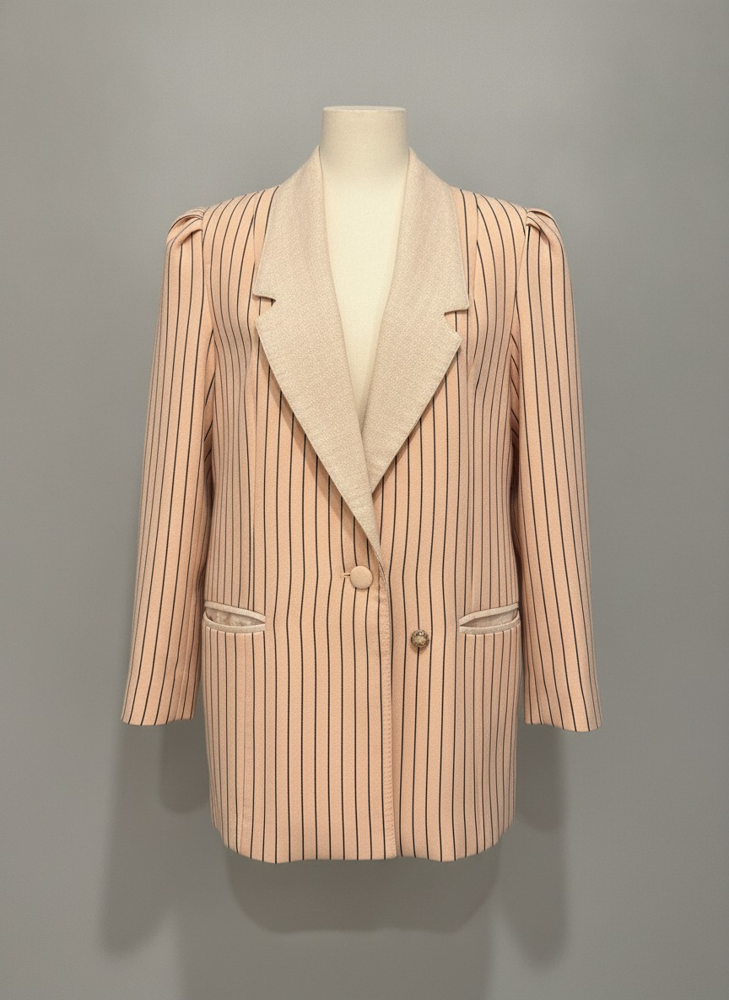 P10blazerLady Yezmin / MODELOS YEZMIN TALLA: 38 ColorRosa claro con rayas verticales negras y solapa cremaEstiloBlazer estructurado de corte vintageMaterial—Algodón 100%Algodón 95% / Elastano 5%Algodón 98% / Elastano 2% (mezclilla)Algodón 80% / Poliéster 20%Algodón 60% / Poliéster 40%Poliéster 100%Poliéster 95% / Elastano 5%Poliéster 65% / Algodón 35%Poliéster 70% / Viscosa 30%Viscosa 100%Viscosa 95% / Elastano 5%Lino 100%Lino 55% / Algodón 45%Lana 100%Lana 80% / Poliamida 20%Seda 100%Cashmere 100%Lana 90% / Cashmere 10%Poliamida (nylon) 100%Poliamida 80% / Elastano 20%Acrílico 100%Poliuretano 100% (piel sintética)Cuero 100%DetallesManga larga, solapa ancha de muesca, bolsillos ribeteados y cierre de botón Aprobar Se cambió la prenda
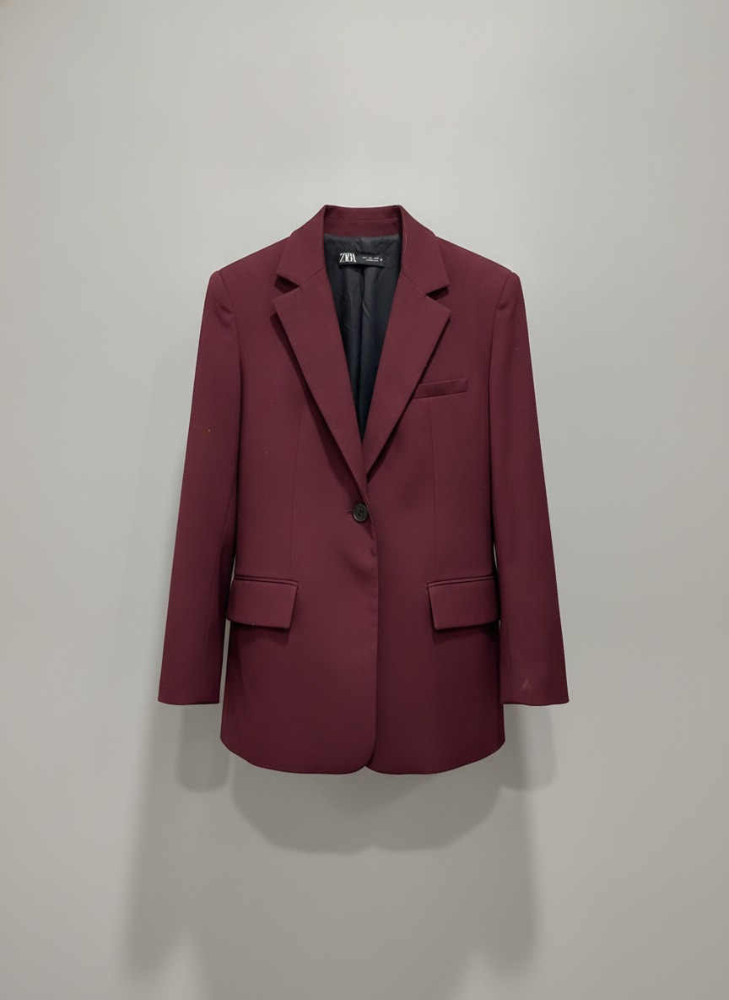 P11blazerZARA EUR S USA S MEX 26 ColorVino lisoEstiloBlazer formal de corte rectoMaterial—Algodón 100%Algodón 95% / Elastano 5%Algodón 98% / Elastano 2% (mezclilla)Algodón 80% / Poliéster 20%Algodón 60% / Poliéster 40%Poliéster 100%Poliéster 95% / Elastano 5%Poliéster 65% / Algodón 35%Poliéster 70% / Viscosa 30%Viscosa 100%Viscosa 95% / Elastano 5%Lino 100%Lino 55% / Algodón 45%Lana 100%Lana 80% / Poliamida 20%Seda 100%Cashmere 100%Lana 90% / Cashmere 10%Poliamida (nylon) 100%Poliamida 80% / Elastano 20%Acrílico 100%Poliuretano 100% (piel sintética)Cuero 100%DetallesManga larga, cuello con solapa de muesca, cierre de botones y bolsillos laterales con tapa Aprobar Se cambió la prenda
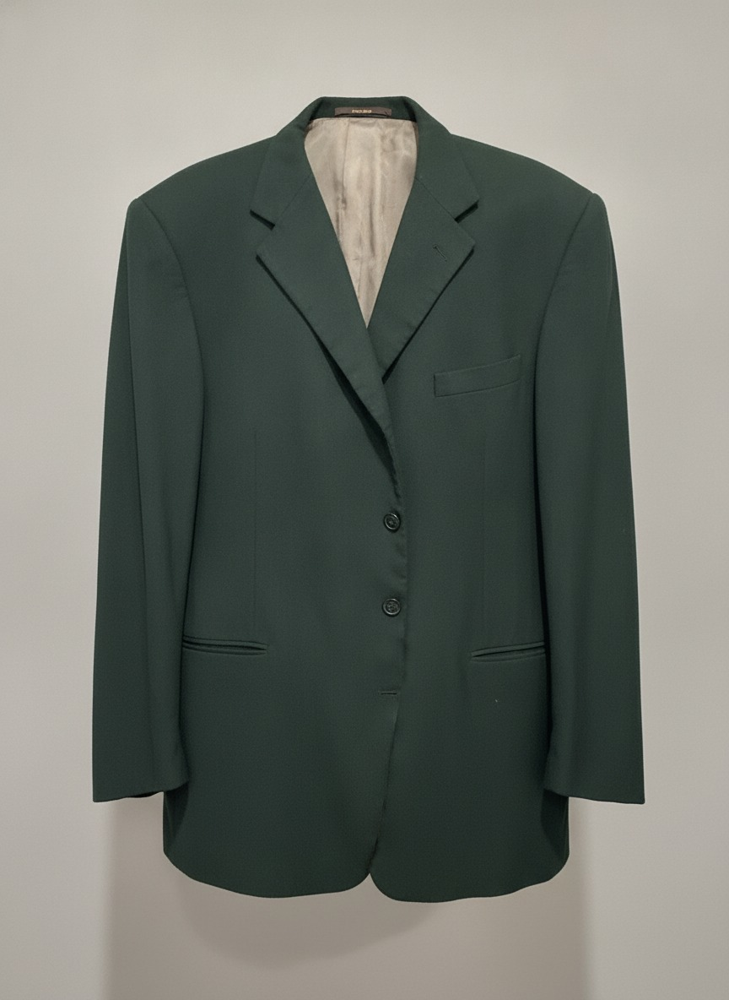 P12blazerMONSIEUR by GIVENCHY ColorVerde oscuro liso con forro gris taupeEstiloBlazer de corte clasico y rectoMaterial—Algodón 100%Algodón 95% / Elastano 5%Algodón 98% / Elastano 2% (mezclilla)Algodón 80% / Poliéster 20%Algodón 60% / Poliéster 40%Poliéster 100%Poliéster 95% / Elastano 5%Poliéster 65% / Algodón 35%Poliéster 70% / Viscosa 30%Viscosa 100%Viscosa 95% / Elastano 5%Lino 100%Lino 55% / Algodón 45%Lana 100%Lana 80% / Poliamida 20%Seda 100%Cashmere 100%Lana 90% / Cashmere 10%Poliamida (nylon) 100%Poliamida 80% / Elastano 20%Acrílico 100%Poliuretano 100% (piel sintética)Cuero 100%DetallesManga larga, solapa de muesca, cierre de botones al frente y bolsillos Aprobar Se cambió la prenda
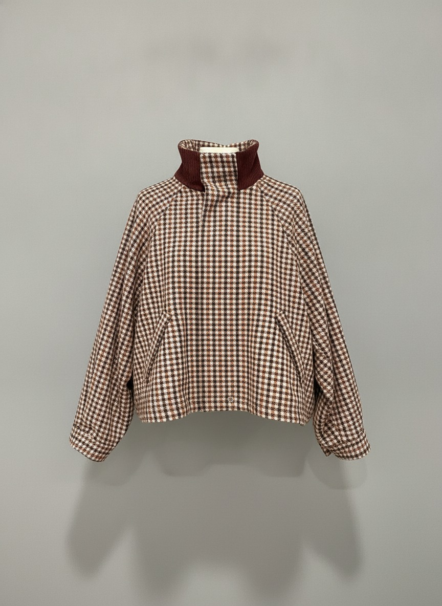 P13chamarraSCALPERS M ColorCafé, beige y terracota con patrón de cuadros tipo pata de galloEstiloChamarra corta de corte holgadoMaterial—Algodón 100%Algodón 95% / Elastano 5%Algodón 98% / Elastano 2% (mezclilla)Algodón 80% / Poliéster 20%Algodón 60% / Poliéster 40%Poliéster 100%Poliéster 95% / Elastano 5%Poliéster 65% / Algodón 35%Poliéster 70% / Viscosa 30%Viscosa 100%Viscosa 95% / Elastano 5%Lino 100%Lino 55% / Algodón 45%Lana 100%Lana 80% / Poliamida 20%Seda 100%Cashmere 100%Lana 90% / Cashmere 10%Poliamida (nylon) 100%Poliamida 80% / Elastano 20%Acrílico 100%Poliuretano 100% (piel sintética)Cuero 100%DetallesManga larga, cuello alto acanalado, cierre frontal de cremallera y bolsillos laterales de ojal Aprobar Se cambió la prenda
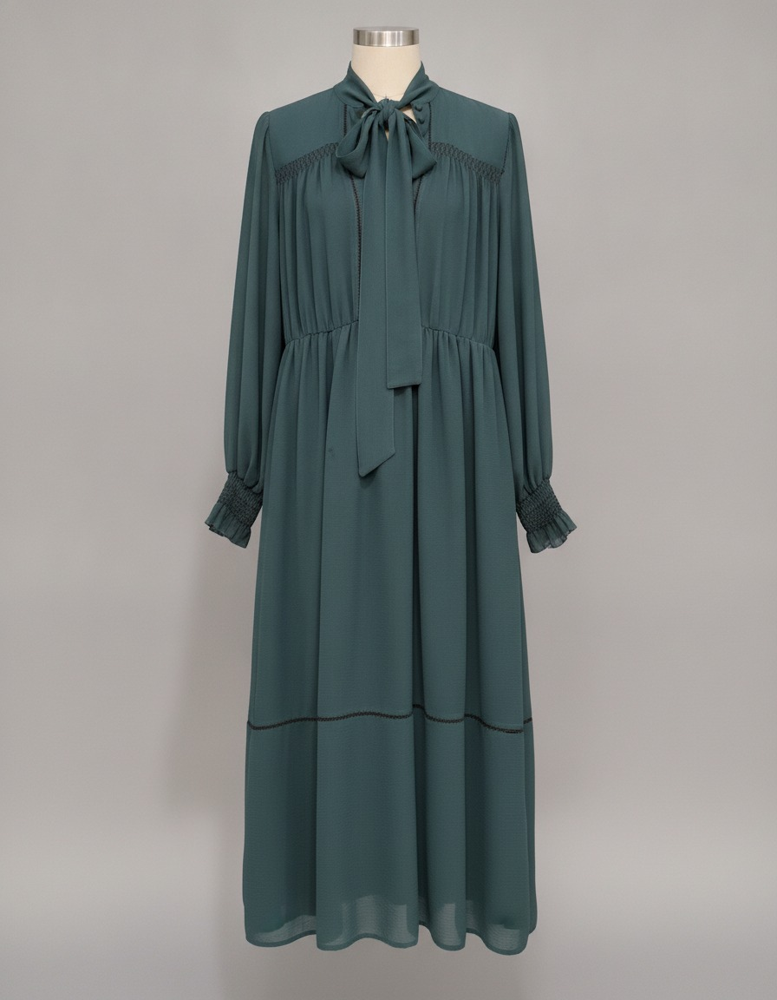 P14vestidoSeeByChloe ColorVerde petróleo lisoEstiloVestido largo de corte holgado y cintura fruncidaMaterial—Algodón 100%Algodón 95% / Elastano 5%Algodón 98% / Elastano 2% (mezclilla)Algodón 80% / Poliéster 20%Algodón 60% / Poliéster 40%Poliéster 100%Poliéster 95% / Elastano 5%Poliéster 65% / Algodón 35%Poliéster 70% / Viscosa 30%Viscosa 100%Viscosa 95% / Elastano 5%Lino 100%Lino 55% / Algodón 45%Lana 100%Lana 80% / Poliamida 20%Seda 100%Cashmere 100%Lana 90% / Cashmere 10%Poliamida (nylon) 100%Poliamida 80% / Elastano 20%Acrílico 100%Poliuretano 100% (piel sintética)Cuero 100%DetallesManga larga con puños elásticos fruncidos, cuello con lazo, alforzas plisadas y ribete oscuro decorativo Aprobar Se cambió la prenda
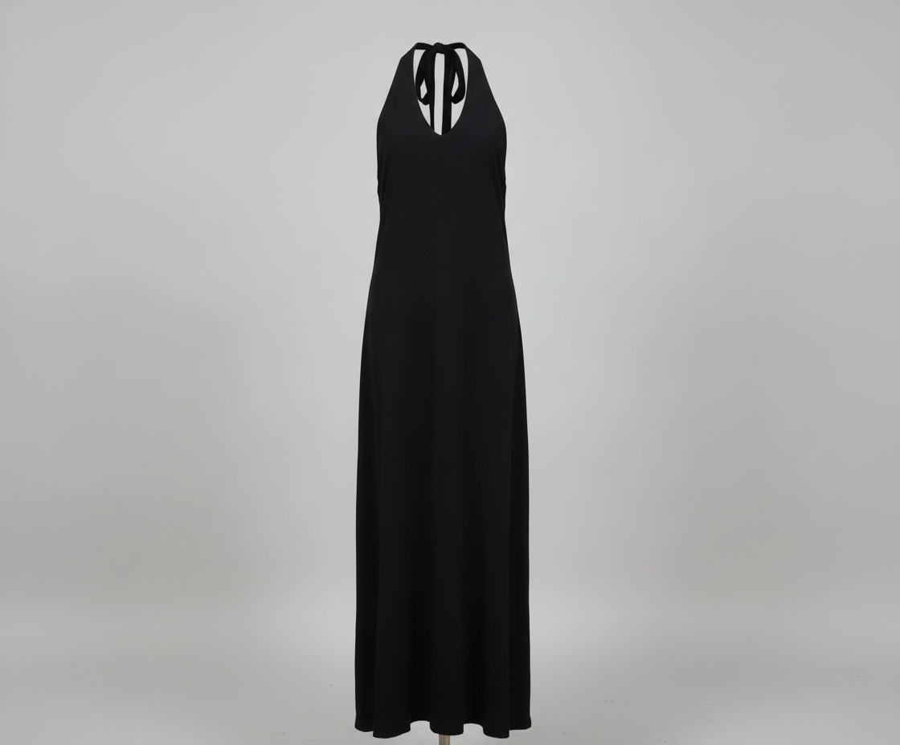 P15vestido ColorNegro lisoEstiloVestido largo multiposición de corte fluidoMaterial—Algodón 100%Algodón 95% / Elastano 5%Algodón 98% / Elastano 2% (mezclilla)Algodón 80% / Poliéster 20%Algodón 60% / Poliéster 40%Poliéster 100%Poliéster 95% / Elastano 5%Poliéster 65% / Algodón 35%Poliéster 70% / Viscosa 30%Viscosa 100%Viscosa 95% / Elastano 5%Lino 100%Lino 55% / Algodón 45%Lana 100%Lana 80% / Poliamida 20%Seda 100%Cashmere 100%Lana 90% / Cashmere 10%Poliamida (nylon) 100%Poliamida 80% / Elastano 20%Acrílico 100%Poliuretano 100% (piel sintética)Cuero 100%DetallesSin mangas, con escote halter y lazos largos ajustables para amarre Aprobar Se cambió la prenda
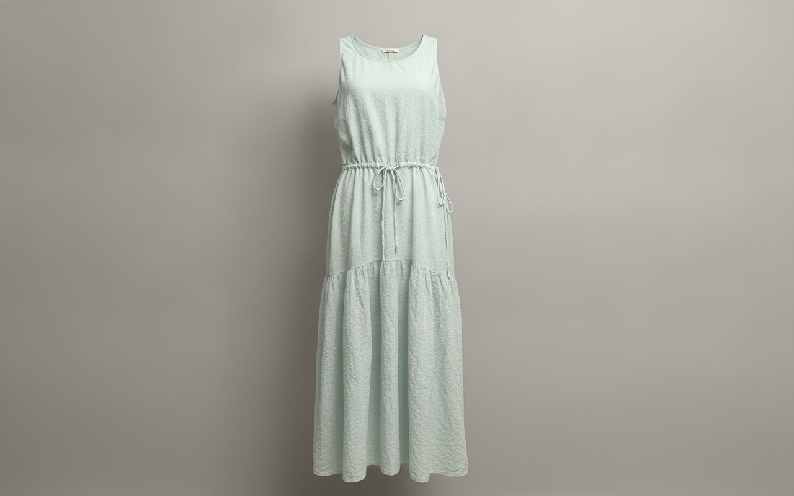 P16vestidoUNIQLO ColorVerde menta claroEstiloVestido largo de corte holgadoMaterial—Algodón 100%Algodón 95% / Elastano 5%Algodón 98% / Elastano 2% (mezclilla)Algodón 80% / Poliéster 20%Algodón 60% / Poliéster 40%Poliéster 100%Poliéster 95% / Elastano 5%Poliéster 65% / Algodón 35%Poliéster 70% / Viscosa 30%Viscosa 100%Viscosa 95% / Elastano 5%Lino 100%Lino 55% / Algodón 45%Lana 100%Lana 80% / Poliamida 20%Seda 100%Cashmere 100%Lana 90% / Cashmere 10%Poliamida (nylon) 100%Poliamida 80% / Elastano 20%Acrílico 100%Poliuretano 100% (piel sintética)Cuero 100%DetallesSin mangas, cuello redondo, cordón ajustable en cintura y falda escalonada Aprobar Se cambió la prenda
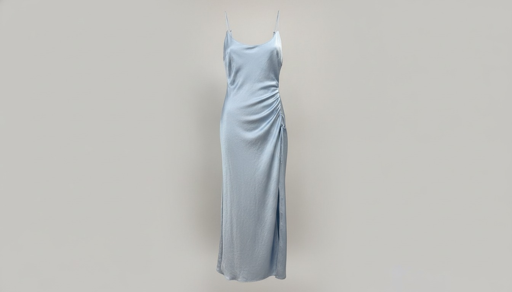 P17vestido ColorAzul celeste lisoEstiloVestido largo de tirantes delgadosMaterial—Algodón 100%Algodón 95% / Elastano 5%Algodón 98% / Elastano 2% (mezclilla)Algodón 80% / Poliéster 20%Algodón 60% / Poliéster 40%Poliéster 100%Poliéster 95% / Elastano 5%Poliéster 65% / Algodón 35%Poliéster 70% / Viscosa 30%Viscosa 100%Viscosa 95% / Elastano 5%Lino 100%Lino 55% / Algodón 45%Lana 100%Lana 80% / Poliamida 20%Seda 100%Cashmere 100%Lana 90% / Cashmere 10%Poliamida (nylon) 100%Poliamida 80% / Elastano 20%Acrílico 100%Poliuretano 100% (piel sintética)Cuero 100%DetallesFruncido lateral drapeado, cierre invisible lateral y abertura en la falda Aprobar Se cambió la prenda
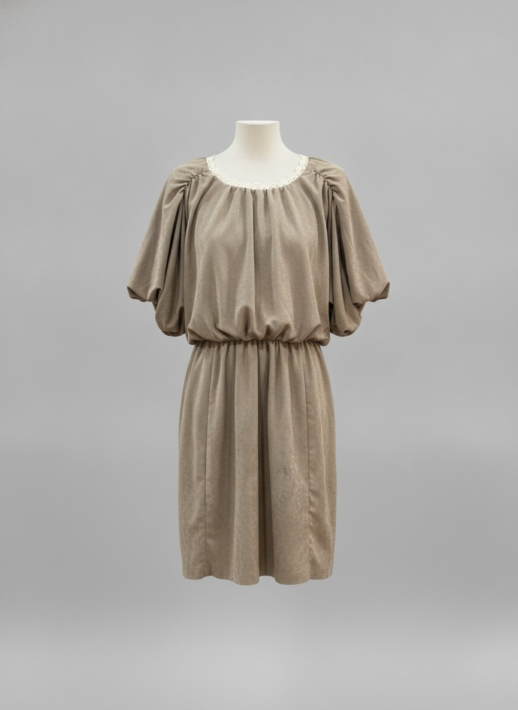 P18vestidoZARA EUR/US M ColorBeige caqui liso con detalles cremaEstiloVestido corto holgado con cintura elástica fruncidaMaterial—Algodón 100%Algodón 95% / Elastano 5%Algodón 98% / Elastano 2% (mezclilla)Algodón 80% / Poliéster 20%Algodón 60% / Poliéster 40%Poliéster 100%Poliéster 95% / Elastano 5%Poliéster 65% / Algodón 35%Poliéster 70% / Viscosa 30%Viscosa 100%Viscosa 95% / Elastano 5%Lino 100%Lino 55% / Algodón 45%Lana 100%Lana 80% / Poliamida 20%Seda 100%Cashmere 100%Lana 90% / Cashmere 10%Poliamida (nylon) 100%Poliamida 80% / Elastano 20%Acrílico 100%Poliuretano 100% (piel sintética)Cuero 100%DetallesManga corta holgada, cuello amplio con ribete de encaje tejido y cintura elástica Aprobar Se cambió la prenda
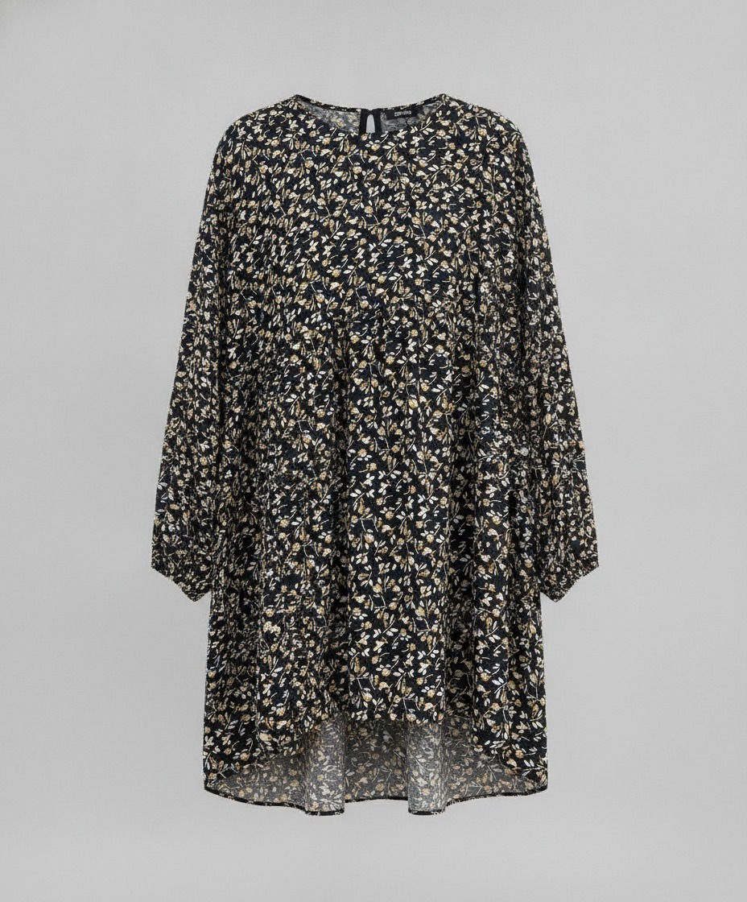 P19vestidoZARA EUR M USA M MEX 28 ColorNegro con estampado floral pequeño en blanco y amarilloEstiloVestido corto holgadoMaterial—Algodón 100%Algodón 95% / Elastano 5%Algodón 98% / Elastano 2% (mezclilla)Algodón 80% / Poliéster 20%Algodón 60% / Poliéster 40%Poliéster 100%Poliéster 95% / Elastano 5%Poliéster 65% / Algodón 35%Poliéster 70% / Viscosa 30%Viscosa 100%Viscosa 95% / Elastano 5%Lino 100%Lino 55% / Algodón 45%Lana 100%Lana 80% / Poliamida 20%Seda 100%Cashmere 100%Lana 90% / Cashmere 10%Poliamida (nylon) 100%Poliamida 80% / Elastano 20%Acrílico 100%Poliuretano 100% (piel sintética)Cuero 100%DetallesManga larga con puños elásticos y cuello redondo Aprobar Se cambió la prenda
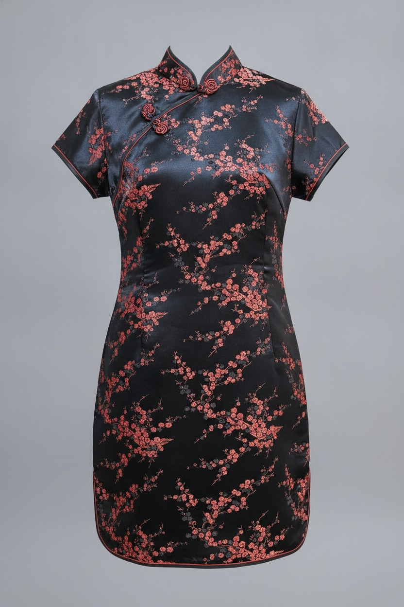 P20vestido ColorNegro con estampado floral en tonos rojo y rosaEstiloVestido corto ajustado estilo qipao o cheongsamMaterial—Algodón 100%Algodón 95% / Elastano 5%Algodón 98% / Elastano 2% (mezclilla)Algodón 80% / Poliéster 20%Algodón 60% / Poliéster 40%Poliéster 100%Poliéster 95% / Elastano 5%Poliéster 65% / Algodón 35%Poliéster 70% / Viscosa 30%Viscosa 100%Viscosa 95% / Elastano 5%Lino 100%Lino 55% / Algodón 45%Lana 100%Lana 80% / Poliamida 20%Seda 100%Cashmere 100%Lana 90% / Cashmere 10%Poliamida (nylon) 100%Poliamida 80% / Elastano 20%Acrílico 100%Poliuretano 100% (piel sintética)Cuero 100%DetallesManga corta, cuello mandarin, solapa asimetrica y botones de nudo trenzado Aprobar Se cambió la prenda
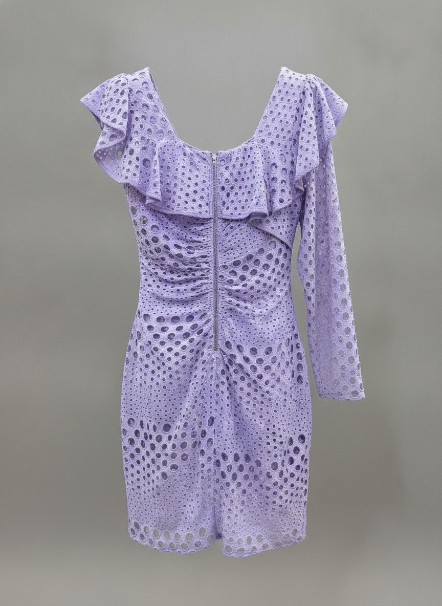 P21vestidofanco M ColorLila lisos con patrón caladoEstiloVestido corto asimétrico de corte ajustadoMaterial—Algodón 100%Algodón 95% / Elastano 5%Algodón 98% / Elastano 2% (mezclilla)Algodón 80% / Poliéster 20%Algodón 60% / Poliéster 40%Poliéster 100%Poliéster 95% / Elastano 5%Poliéster 65% / Algodón 35%Poliéster 70% / Viscosa 30%Viscosa 100%Viscosa 95% / Elastano 5%Lino 100%Lino 55% / Algodón 45%Lana 100%Lana 80% / Poliamida 20%Seda 100%Cashmere 100%Lana 90% / Cashmere 10%Poliamida (nylon) 100%Poliamida 80% / Elastano 20%Acrílico 100%Poliuretano 100% (piel sintética)Cuero 100%DetallesUna manga larga, olanes en el torso, fruncido central y cierre de cremallera frontal Aprobar Se cambió la prenda
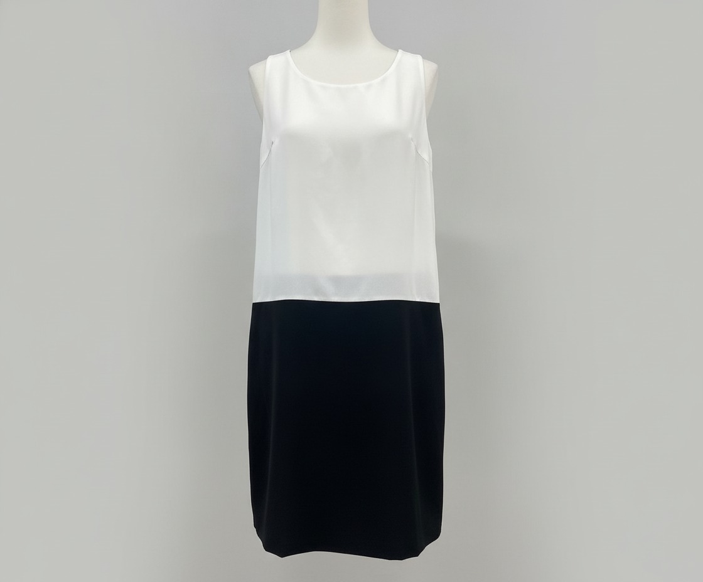 P22vestido ColorBlanco y negro en diseño de bloques de colorEstiloVestido corto de corte recto sin mangasMaterial—Algodón 100%Algodón 95% / Elastano 5%Algodón 98% / Elastano 2% (mezclilla)Algodón 80% / Poliéster 20%Algodón 60% / Poliéster 40%Poliéster 100%Poliéster 95% / Elastano 5%Poliéster 65% / Algodón 35%Poliéster 70% / Viscosa 30%Viscosa 100%Viscosa 95% / Elastano 5%Lino 100%Lino 55% / Algodón 45%Lana 100%Lana 80% / Poliamida 20%Seda 100%Cashmere 100%Lana 90% / Cashmere 10%Poliamida (nylon) 100%Poliamida 80% / Elastano 20%Acrílico 100%Poliuretano 100% (piel sintética)Cuero 100%DetallesCuello redondo, sin mangas y abertura circular en la espalda Aprobar Se cambió la prenda
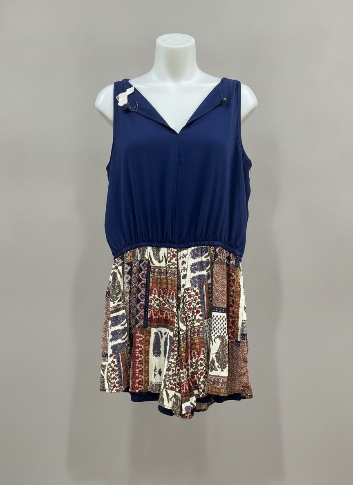 P23vestidoM Made in U.S.A. ColorAzul marino en la parte superior y estampado patchwork étnico multicolor en la faldaEstiloVestido corto casual con corte en la cinturaMaterial—Algodón 100%Algodón 95% / Elastano 5%Algodón 98% / Elastano 2% (mezclilla)Algodón 80% / Poliéster 20%Algodón 60% / Poliéster 40%Poliéster 100%Poliéster 95% / Elastano 5%Poliéster 65% / Algodón 35%Poliéster 70% / Viscosa 30%Viscosa 100%Viscosa 95% / Elastano 5%Lino 100%Lino 55% / Algodón 45%Lana 100%Lana 80% / Poliamida 20%Seda 100%Cashmere 100%Lana 90% / Cashmere 10%Poliamida (nylon) 100%Poliamida 80% / Elastano 20%Acrílico 100%Poliuretano 100% (piel sintética)Cuero 100%DetallesSin mangas, escote en V, tirantes anchos y cintura elástica con jareta ajustable Aprobar Se cambió la prenda
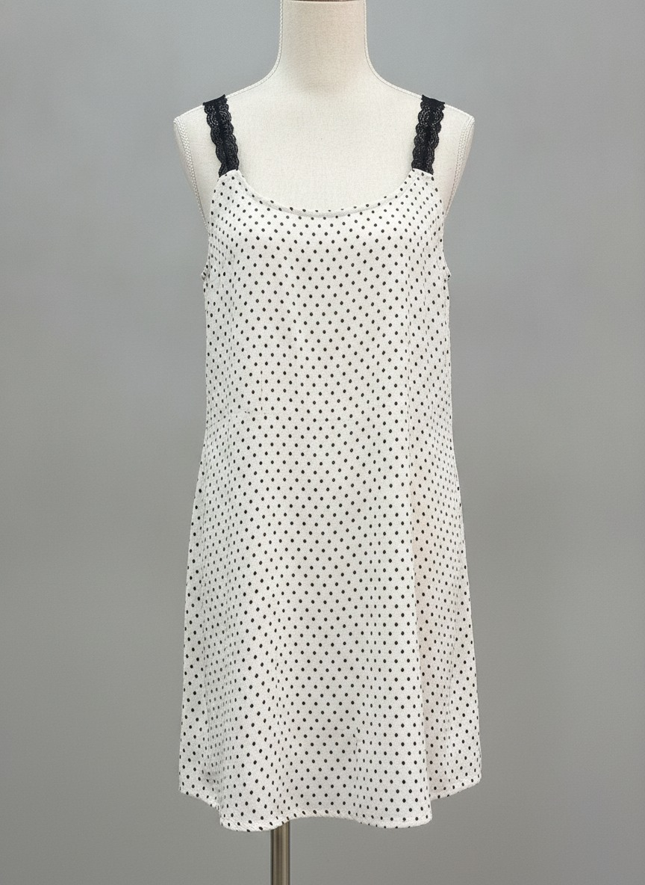 P24topkur.kuma ColorBlanco hueso con estampado de pequeños rombos negrosEstiloTop de tirantes de corte fluidoMaterial—Algodón 100%Algodón 95% / Elastano 5%Algodón 98% / Elastano 2% (mezclilla)Algodón 80% / Poliéster 20%Algodón 60% / Poliéster 40%Poliéster 100%Poliéster 95% / Elastano 5%Poliéster 65% / Algodón 35%Poliéster 70% / Viscosa 30%Viscosa 100%Viscosa 95% / Elastano 5%Lino 100%Lino 55% / Algodón 45%Lana 100%Lana 80% / Poliamida 20%Seda 100%Cashmere 100%Lana 90% / Cashmere 10%Poliamida (nylon) 100%Poliamida 80% / Elastano 20%Acrílico 100%Poliuretano 100% (piel sintética)Cuero 100%DetallesSin mangas, tirantes anchos de encaje negro y escote recto Aprobar Se cambió la prenda
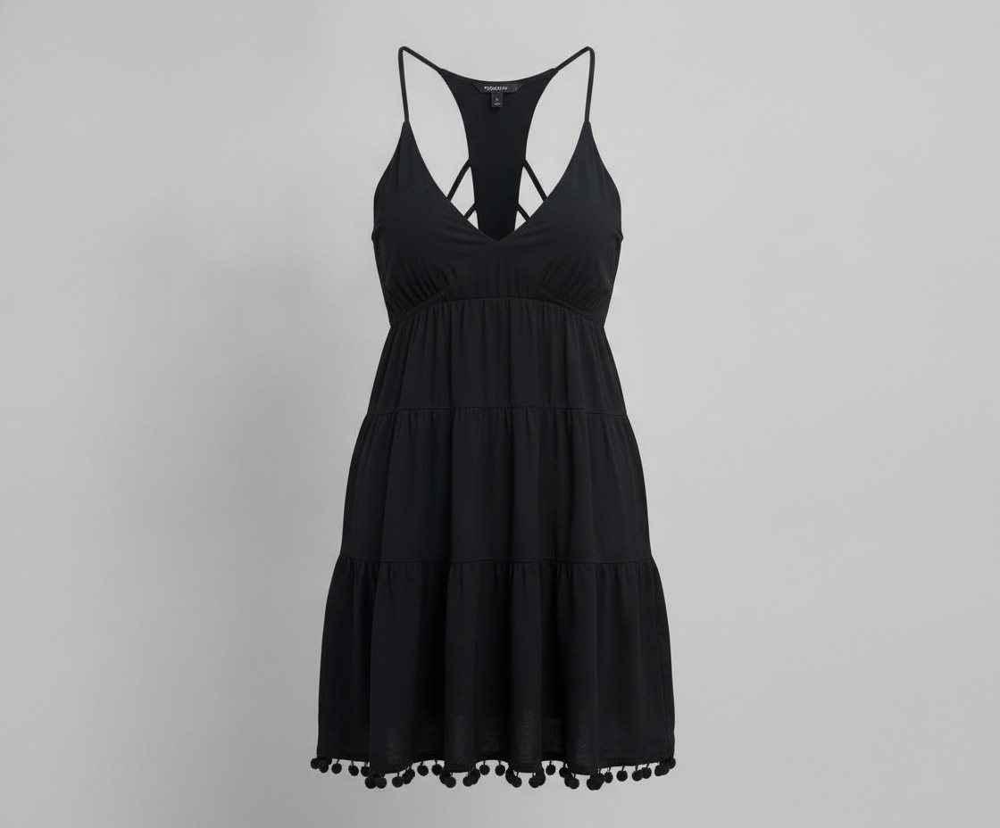 P25vestidoFOREVER 21 ColorNegro lisoEstiloVestido corto holgado con falda a capasMaterial—Algodón 100%Algodón 95% / Elastano 5%Algodón 98% / Elastano 2% (mezclilla)Algodón 80% / Poliéster 20%Algodón 60% / Poliéster 40%Poliéster 100%Poliéster 95% / Elastano 5%Poliéster 65% / Algodón 35%Poliéster 70% / Viscosa 30%Viscosa 100%Viscosa 95% / Elastano 5%Lino 100%Lino 55% / Algodón 45%Lana 100%Lana 80% / Poliamida 20%Seda 100%Cashmere 100%Lana 90% / Cashmere 10%Poliamida (nylon) 100%Poliamida 80% / Elastano 20%Acrílico 100%Poliuretano 100% (piel sintética)Cuero 100%DetallesEscote en V, tirantes delgados cruzados en la espalda y dobladillo con pompones Aprobar Se cambió la prenda
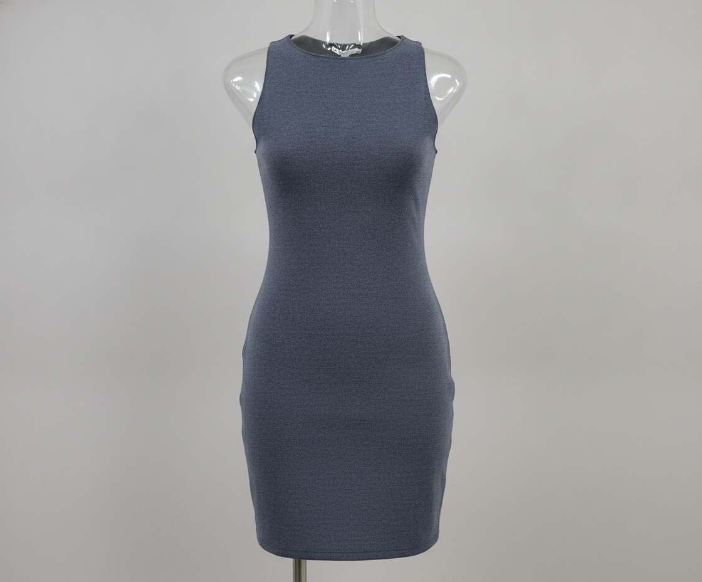 P26vestidoZARA ColorGris oscuro azulado lisoEstiloVestido corto de corte ajustadoMaterial—Algodón 100%Algodón 95% / Elastano 5%Algodón 98% / Elastano 2% (mezclilla)Algodón 80% / Poliéster 20%Algodón 60% / Poliéster 40%Poliéster 100%Poliéster 95% / Elastano 5%Poliéster 65% / Algodón 35%Poliéster 70% / Viscosa 30%Viscosa 100%Viscosa 95% / Elastano 5%Lino 100%Lino 55% / Algodón 45%Lana 100%Lana 80% / Poliamida 20%Seda 100%Cashmere 100%Lana 90% / Cashmere 10%Poliamida (nylon) 100%Poliamida 80% / Elastano 20%Acrílico 100%Poliuretano 100% (piel sintética)Cuero 100%DetallesSin mangas, escote barco y largo corto Aprobar Se cambió la prenda
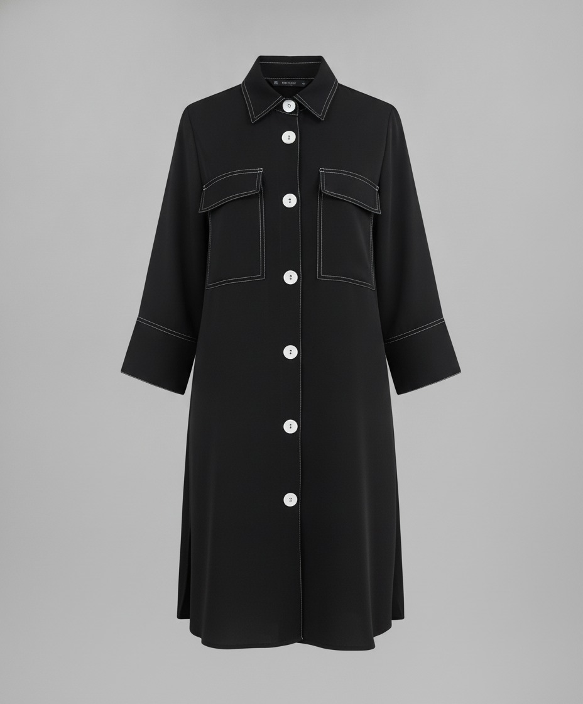 P27chamarraZARA BASIC ColorNegro con costuras de contraste en hilo blancoEstiloSobrecamisa larga de corte rectoMaterial—Algodón 100%Algodón 95% / Elastano 5%Algodón 98% / Elastano 2% (mezclilla)Algodón 80% / Poliéster 20%Algodón 60% / Poliéster 40%Poliéster 100%Poliéster 95% / Elastano 5%Poliéster 65% / Algodón 35%Poliéster 70% / Viscosa 30%Viscosa 100%Viscosa 95% / Elastano 5%Lino 100%Lino 55% / Algodón 45%Lana 100%Lana 80% / Poliamida 20%Seda 100%Cashmere 100%Lana 90% / Cashmere 10%Poliamida (nylon) 100%Poliamida 80% / Elastano 20%Acrílico 100%Poliuretano 100% (piel sintética)Cuero 100%DetallesCuello camisero, botones blancos, bolsillos de parche con solapa y mangas tres cuartos Aprobar Se cambió la prenda
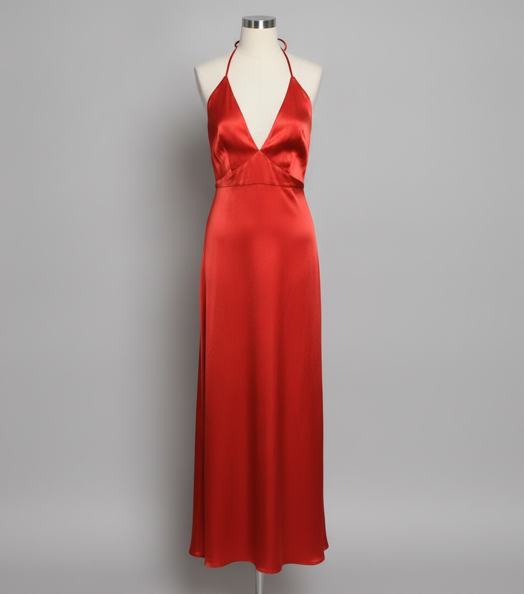 P28vestido ColorRojo brillanteEstiloVestido largo fluido estilo halterMaterial—Algodón 100%Algodón 95% / Elastano 5%Algodón 98% / Elastano 2% (mezclilla)Algodón 80% / Poliéster 20%Algodón 60% / Poliéster 40%Poliéster 100%Poliéster 95% / Elastano 5%Poliéster 65% / Algodón 35%Poliéster 70% / Viscosa 30%Viscosa 100%Viscosa 95% / Elastano 5%Lino 100%Lino 55% / Algodón 45%Lana 100%Lana 80% / Poliamida 20%Seda 100%Cashmere 100%Lana 90% / Cashmere 10%Poliamida (nylon) 100%Poliamida 80% / Elastano 20%Acrílico 100%Poliuretano 100% (piel sintética)Cuero 100%DetallesTirantes delgados y escote pronunciado Aprobar Se cambió la prenda
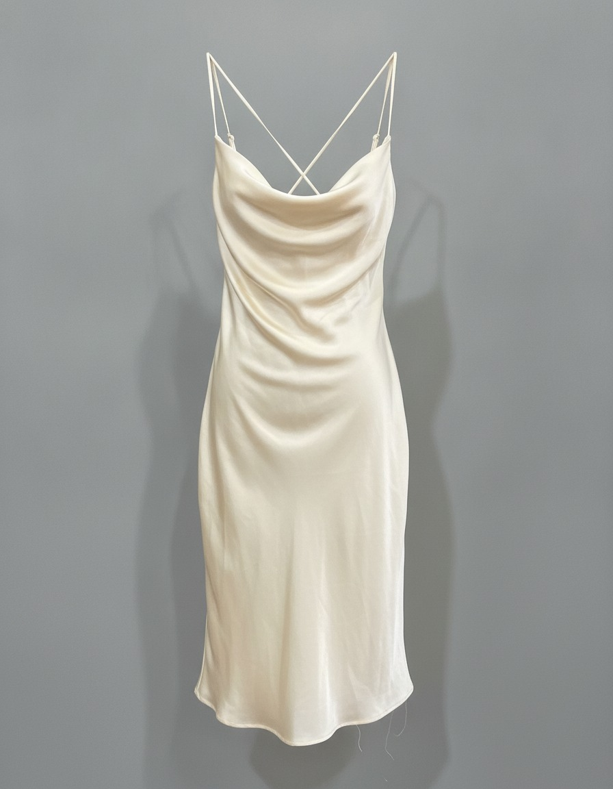 P29vestidoZARA EUR M USA M MEX 28 ColorCrema marfil lisoEstiloVestido corto de corte fluidoMaterial—Algodón 100%Algodón 95% / Elastano 5%Algodón 98% / Elastano 2% (mezclilla)Algodón 80% / Poliéster 20%Algodón 60% / Poliéster 40%Poliéster 100%Poliéster 95% / Elastano 5%Poliéster 65% / Algodón 35%Poliéster 70% / Viscosa 30%Viscosa 100%Viscosa 95% / Elastano 5%Lino 100%Lino 55% / Algodón 45%Lana 100%Lana 80% / Poliamida 20%Seda 100%Cashmere 100%Lana 90% / Cashmere 10%Poliamida (nylon) 100%Poliamida 80% / Elastano 20%Acrílico 100%Poliuretano 100% (piel sintética)Cuero 100%DetallesEscote drapeado cowl neck, tirantes delgados spaghetti y largo corto Aprobar Se cambió la prenda
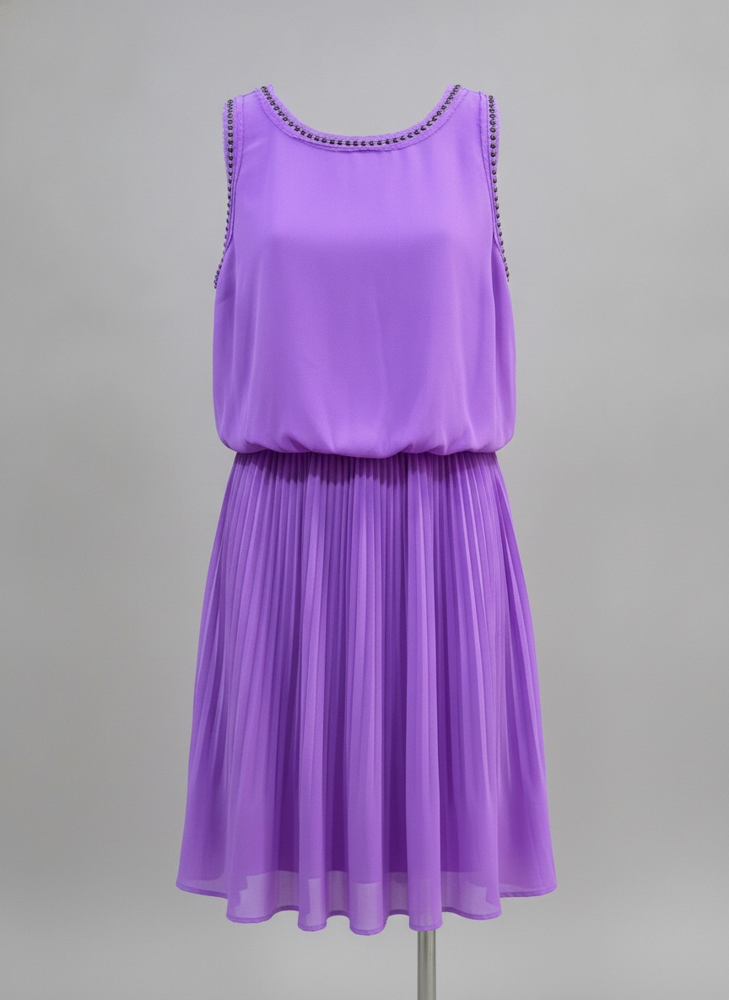 P30vestidoGUESS Los Angeles 6 ColorMorado lavanda lisoEstiloVestido corto con blusa blusada y falda plisadaMaterial—Algodón 100%Algodón 95% / Elastano 5%Algodón 98% / Elastano 2% (mezclilla)Algodón 80% / Poliéster 20%Algodón 60% / Poliéster 40%Poliéster 100%Poliéster 95% / Elastano 5%Poliéster 65% / Algodón 35%Poliéster 70% / Viscosa 30%Viscosa 100%Viscosa 95% / Elastano 5%Lino 100%Lino 55% / Algodón 45%Lana 100%Lana 80% / Poliamida 20%Seda 100%Cashmere 100%Lana 90% / Cashmere 10%Poliamida (nylon) 100%Poliamida 80% / Elastano 20%Acrílico 100%Poliuretano 100% (piel sintética)Cuero 100%DetallesSin mangas, cuello y sisas decorados con cuentas metálicas y falda plisada Aprobar Se cambió la prenda
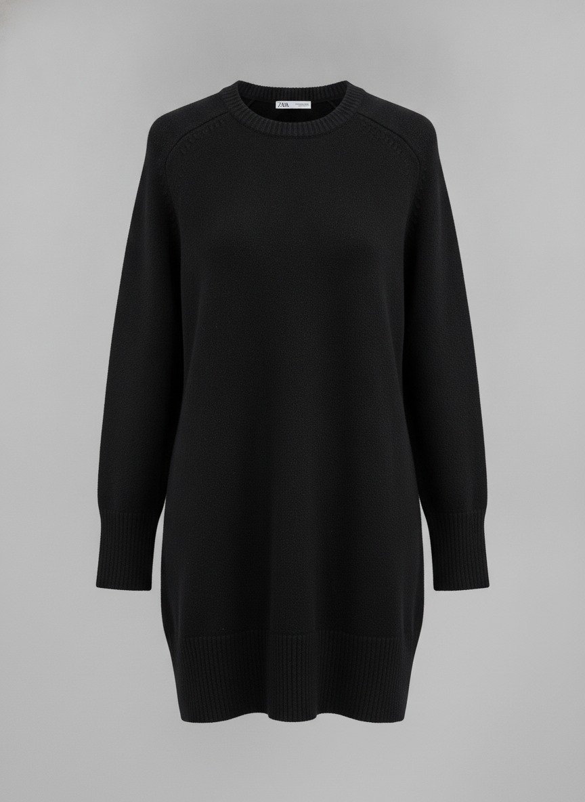 P31sweaterZARA EUR M USA M MEX 28 ColorNegro lisoEstiloSuéter holgado de corte largoMaterial—Algodón 100%Algodón 95% / Elastano 5%Algodón 98% / Elastano 2% (mezclilla)Algodón 80% / Poliéster 20%Algodón 60% / Poliéster 40%Poliéster 100%Poliéster 95% / Elastano 5%Poliéster 65% / Algodón 35%Poliéster 70% / Viscosa 30%Viscosa 100%Viscosa 95% / Elastano 5%Lino 100%Lino 55% / Algodón 45%Lana 100%Lana 80% / Poliamida 20%Seda 100%Cashmere 100%Lana 90% / Cashmere 10%Poliamida (nylon) 100%Poliamida 80% / Elastano 20%Acrílico 100%Poliuretano 100% (piel sintética)Cuero 100%DetallesCuello redondo, manga larga y bordes acanalados en cuello, puños y dobladillo Aprobar Se cambió la prenda
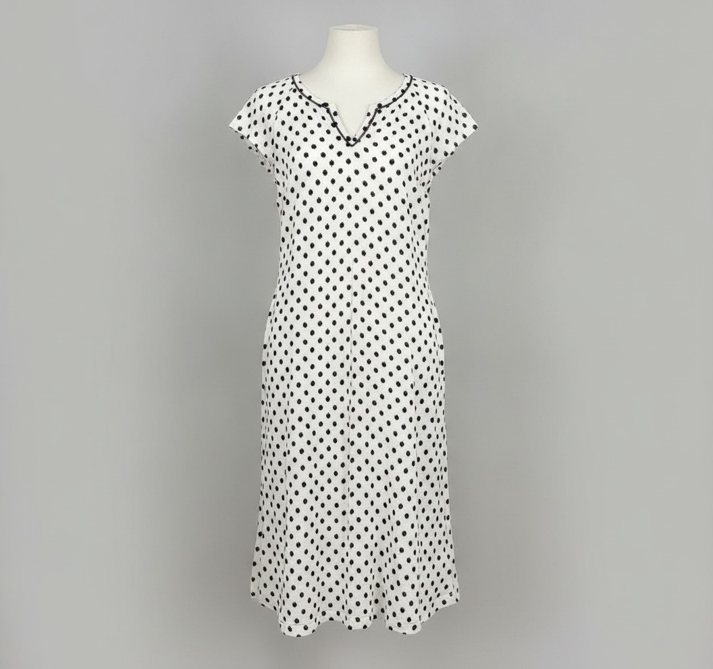 P32vestidoTOMMY HILFIGER ColorBlanco con estampado de lunares negrosEstiloVestido corto de corte rectoMaterial—Algodón 100%Algodón 95% / Elastano 5%Algodón 98% / Elastano 2% (mezclilla)Algodón 80% / Poliéster 20%Algodón 60% / Poliéster 40%Poliéster 100%Poliéster 95% / Elastano 5%Poliéster 65% / Algodón 35%Poliéster 70% / Viscosa 30%Viscosa 100%Viscosa 95% / Elastano 5%Lino 100%Lino 55% / Algodón 45%Lana 100%Lana 80% / Poliamida 20%Seda 100%Cashmere 100%Lana 90% / Cashmere 10%Poliamida (nylon) 100%Poliamida 80% / Elastano 20%Acrílico 100%Poliuretano 100% (piel sintética)Cuero 100%DetallesManga corta tipo cap y cuello en V con bordado negro Aprobar Se cambió la prenda
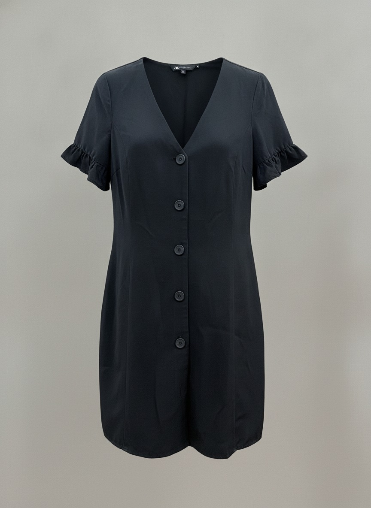 P33vestidoZARA trf collection EUR M USA M MEX 28 ColorNegro lisoEstiloVestido corto de corte entalladoMaterial—Algodón 100%Algodón 95% / Elastano 5%Algodón 98% / Elastano 2% (mezclilla)Algodón 80% / Poliéster 20%Algodón 60% / Poliéster 40%Poliéster 100%Poliéster 95% / Elastano 5%Poliéster 65% / Algodón 35%Poliéster 70% / Viscosa 30%Viscosa 100%Viscosa 95% / Elastano 5%Lino 100%Lino 55% / Algodón 45%Lana 100%Lana 80% / Poliamida 20%Seda 100%Cashmere 100%Lana 90% / Cashmere 10%Poliamida (nylon) 100%Poliamida 80% / Elastano 20%Acrílico 100%Poliuretano 100% (piel sintética)Cuero 100%DetallesManga corta con olanes en los puños, escote en V y botonadura frontal Aprobar Se cambió la prenda
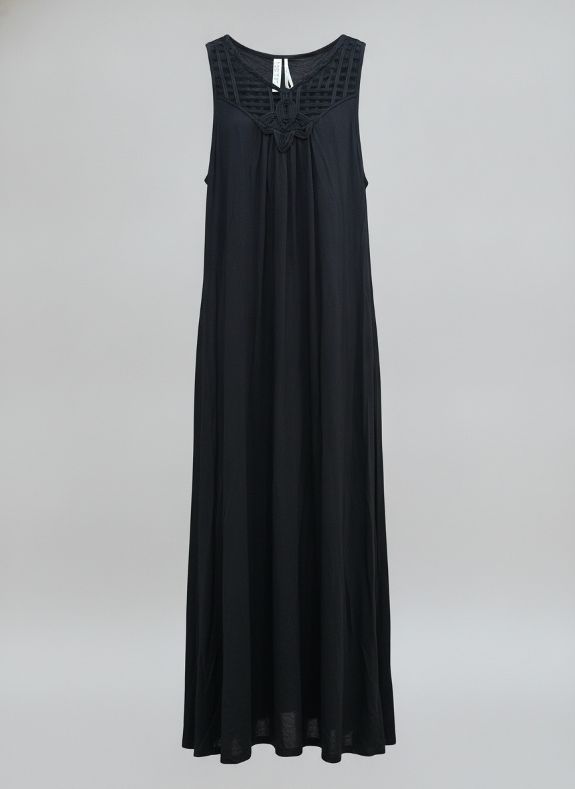 P34vestidokische M ColorNegro lisoEstiloVestido largo sin mangas de corte holgadoMaterial—Algodón 100%Algodón 95% / Elastano 5%Algodón 98% / Elastano 2% (mezclilla)Algodón 80% / Poliéster 20%Algodón 60% / Poliéster 40%Poliéster 100%Poliéster 95% / Elastano 5%Poliéster 65% / Algodón 35%Poliéster 70% / Viscosa 30%Viscosa 100%Viscosa 95% / Elastano 5%Lino 100%Lino 55% / Algodón 45%Lana 100%Lana 80% / Poliamida 20%Seda 100%Cashmere 100%Lana 90% / Cashmere 10%Poliamida (nylon) 100%Poliamida 80% / Elastano 20%Acrílico 100%Poliuretano 100% (piel sintética)Cuero 100%DetallesSin mangas, cuello redondo con detalle calado tipo macrame y pliegues decorativos Aprobar Se cambió la prenda
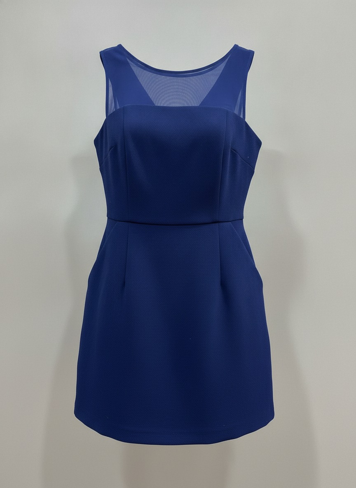 P35vestidoBCBGENERATION 6 ColorAzul marino lisoEstiloVestido corto entallado sin mangasMaterial—Algodón 100%Algodón 95% / Elastano 5%Algodón 98% / Elastano 2% (mezclilla)Algodón 80% / Poliéster 20%Algodón 60% / Poliéster 40%Poliéster 100%Poliéster 95% / Elastano 5%Poliéster 65% / Algodón 35%Poliéster 70% / Viscosa 30%Viscosa 100%Viscosa 95% / Elastano 5%Lino 100%Lino 55% / Algodón 45%Lana 100%Lana 80% / Poliamida 20%Seda 100%Cashmere 100%Lana 90% / Cashmere 10%Poliamida (nylon) 100%Poliamida 80% / Elastano 20%Acrílico 100%Poliuretano 100% (piel sintética)Cuero 100%DetallesPaneles de malla transparente en los hombros, corte en la cintura y cierre posterior invisible Aprobar Se cambió la prenda
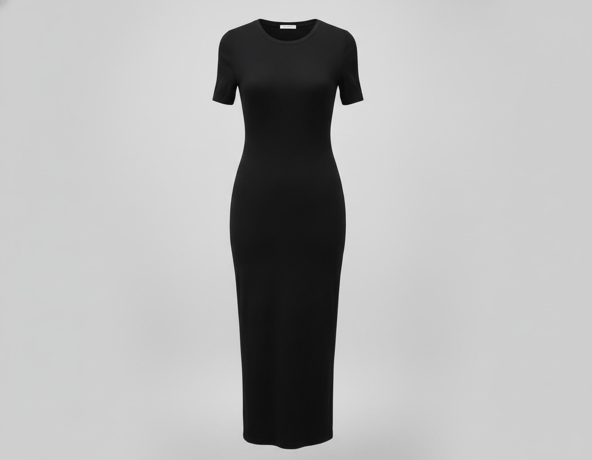 P36vestidoPULL&BEAR EUR S USA S MEX 26 ColorNegro lisoEstiloVestido ajustado de corte recto y largo midiMaterial—Algodón 100%Algodón 95% / Elastano 5%Algodón 98% / Elastano 2% (mezclilla)Algodón 80% / Poliéster 20%Algodón 60% / Poliéster 40%Poliéster 100%Poliéster 95% / Elastano 5%Poliéster 65% / Algodón 35%Poliéster 70% / Viscosa 30%Viscosa 100%Viscosa 95% / Elastano 5%Lino 100%Lino 55% / Algodón 45%Lana 100%Lana 80% / Poliamida 20%Seda 100%Cashmere 100%Lana 90% / Cashmere 10%Poliamida (nylon) 100%Poliamida 80% / Elastano 20%Acrílico 100%Poliuretano 100% (piel sintética)Cuero 100%DetallesManga corta, cuello redondo, diseno minimalista Aprobar Se cambió la prenda
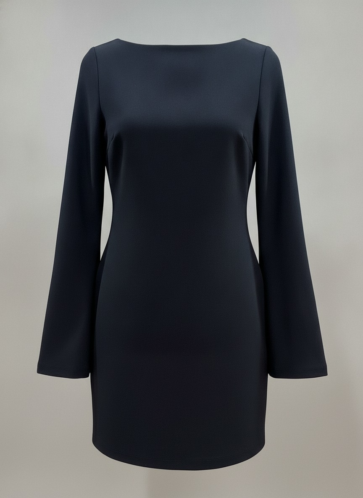 P37vestidoZARA EUR M USA M MEX 28 ColorNegro lisoEstiloVestido corto de corte ajustadoMaterial—Algodón 100%Algodón 95% / Elastano 5%Algodón 98% / Elastano 2% (mezclilla)Algodón 80% / Poliéster 20%Algodón 60% / Poliéster 40%Poliéster 100%Poliéster 95% / Elastano 5%Poliéster 65% / Algodón 35%Poliéster 70% / Viscosa 30%Viscosa 100%Viscosa 95% / Elastano 5%Lino 100%Lino 55% / Algodón 45%Lana 100%Lana 80% / Poliamida 20%Seda 100%Cashmere 100%Lana 90% / Cashmere 10%Poliamida (nylon) 100%Poliamida 80% / Elastano 20%Acrílico 100%Poliuretano 100% (piel sintética)Cuero 100%DetallesManga larga acampanada, largo corto, cuello barco y abertura trasera Aprobar Se cambió la prenda